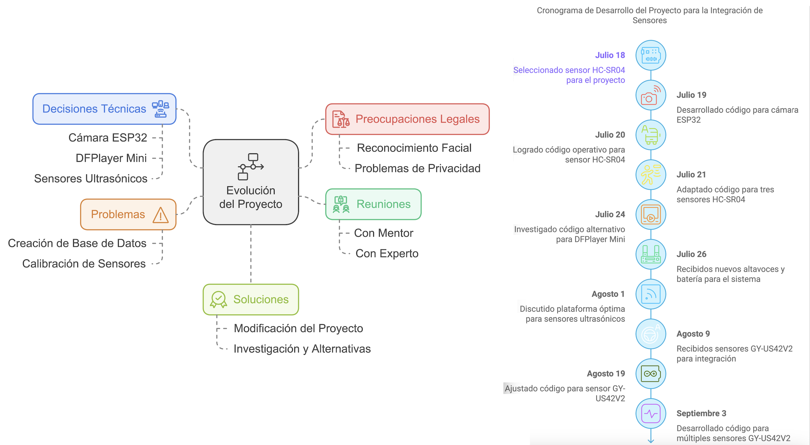

Bitácora
- Día 1/Fecha: 28 de Febrero de 2025
Actividad: Investigamos cómo podemos mejorar el SIPRADV considerando las mejoras propuestas el año anterior.
Resultados: El año anterior habíamos propuesto mejorarlo en cuanto al tamaño, es decir, en lugar de un protoboard grande, utilizar un custom pcb, también, si hay, sensores que sean más precisos y que tengan mayor rango de distancia.
Problemas y Soluciones: La solución que encontramos es utilizar el Raspberry Pi 5 gracias a sus capacidades de IA y LLMs.
- Día 2/Fecha: 5 de Marzo de 2025
Actividad: Investigamos sobre el tema y encontramos que hay sitios web y proyectos que ya han hecho proyectos de reconocimiento de objetos con el Raspberry Pi 5
Resultados: Ningún proyecto tiene ambos object recognition con LLM.
Problemas y Soluciones: La documentación en línea es extensa en ambas partes, pero no logramos encontrar documentación en la cual se unan ambas.
- Día 3/Fecha: 12 de Marzo de 2025
Actividad: uscamos cuáles componentes nos funcionan para utilizar. Primero decidimos cúal Raspberry Pi (El 4, 4B o 5) tienen diferentes pros y contras. El Raspberry Pi 4 tiene mucha documentación ya que ha sido público por un tiempo pero no tiene la misma capacidad y potencia del Raspberry Pi 5.
- Día 4/Fecha: 16 de Abril de 2025
Actividad: Compramos los componentes.
Resultados: Compramos un Raspberry Pi 5 más su cooling case, compramos un Picam 3, una memoria de 128 GB, un cargador para el Raspberry Pi 5, un speaker así como unos audífonos, una batería de 30,000 mAh y un Google Coral USB.
Problemas: Dudamos en qué batería comprar. Si compramos una de Anker(que es una marca bien reconocida y destacada) o una de Amazon. Optamos por la de Anker.
- Día 5/Fecha: 8 de Mayo de 2025
Actividad: Abrimos el empaque en el cual vino el kit de Raspberry Pi 5 e instalamos el cooling device al Raspberry Pi.
Resultados: El hardware quedó protegido y listo.
Problemas y Soluciones: Las instrucciones del empaque no fueron claras en cómo colocar la tapa de forma correcta, pero después lo logramos.
- Día 6/Fecha: 11 de Mayo de 2025
Actividad: Configuramos el Raspberry Pi con Raspberry Pi Imager. - Día 7/Fecha: 12 de Mayo de 2025
Actividad: Removimos el cover del raspberry Pi y seguimos los pasos de este tutorial: YOLO Object and Animal Recognition on the Raspberry Pi 5 | Beginner Python Guide .
Resultados: El código no funcionó, no detectaba la PiCam 3.
Problemas y Soluciones: Buscamos otro código que se utiliza con el PiCam 3 (en teoría debería de poder ser utilizado el PiCam 3 siempre que sea utilizando la librería lib cam).

- Día 8/Fecha: 13 de Mayo
Actividad Realizada: Ningún código que ponemos funcionaba, revisamos de vuelta el producto en Amazon y nos dimos cuenta que este no es compatible con Raspberry Pi 5 sino que es compatible con Raspberry Pi 4B para abajo.
Resultados: El problema no era el código sino la cámara, específicamente compramos un “Arducam for Raspberry Pi Camera Module 3” pero no revisamos bien si era compatible.
- Día 9/Fecha: 14 de Mayo de 2025
Actividad Realizada: Pensamos que el problema puede ser la cámara ya que en nuevas versiones el cable con el cual se conecta el Picam 3 al Raspberry Pi 5 no es el mismo que el antiguo. - Día 10/Fecha: 15 de Mayo de 2025
Actividad Realizada: Hoy volvimos a ver el tutorial y nos dimos cuenta que el cable no es el incorrecto, sino que la cámara es la incompatible.
Resultados: El cable de la cámara no es el problema.
Problemas y Soluciones: Seguir buscando algún lugar donde comprar el cable o sino encontrar alguna otra cámara.
- Día 11/Fecha: 23 de Mayo de 2025
Actividad Realizada: Probamos la pixy cam 2 ya que Liang la tiene en su casa. - Día 12/Fecha: 28 de Mayo de 2025
Actividad Realizada: Ya que no queremos esperar al envío de Estados Unidos a Panamá, tenemos que buscar alternativas dentro del país. El problema es que no hay modelos de PiCam en Panamá (o eso es lo que encontramos). - Día 13/Fecha: 1 de Junio de 2025
Actividad Realizada: Compramos la cámara Logitech C270 en Pana Compu pero tenemos que esperar para mañana.
< - Día 14/Fecha: 2 de Junio de 2025
Actividad Realizada: Un miembro del equipo fue a retirar la nueva cámara.
Resultados: Encontramos y compramos una cámara de reemplazo pero no la tenemos aún.
- Día 15/Fecha: 8 de Junio de 2025
Actividad Realizada: Intentamos de entrar a el Raspberry Pi pero este se quedaba en una pantalla en negro con un cursor blanco parpadeando en la esquina izquierda superior. .
Resultados: El Raspberry se estaba tomando considerablemente más tiempo de lo que normalmente se tomaba al iniciar.
- Día 16/Fecha: 18 de Junio de 2025
Actividad Realizada: Volvimos a “image” el Raspberry Pi (básicamente seguimos lo que hicimos el día 6). - Día 17/Fecha: 22 de Junio de 2025
Actividad Realizada: Fuimos a este sitio web: Getting Started with YOLO Object and Animal Recognition on the Raspberry Pi - Tutorial Australia
- Día 18/Fecha: 25 de Junio de 2025
Actividad Realizada: Entramos a Thonny y lo cambiamos a “modo regular”
- Agosto 22
Actividad Realizada: Utilizamos el modo I2C del GY-US42V2, pero no logramos obtener resultados válidos.
Resultados: El modo I2C no proporcionó lecturas útiles. - Agosto 23
Actividad Realizada: Investigamos en línea para encontrar más información sobre el sensor GY-US42V2.
- Agosto 25
Actividad Realizada: Encontramos un código que inicialmente no funcionaba para el DFPlayer Mini, pero luego identificamos una versión que sí funcionó. Intentamos utilizar múltiples sensores GY-US42V2, pero esta configuración presentó problemas. - Agosto 27
Actividad Realizada: Nos reunimos con un experto en robótica para recibir asesoría sobre las dificultades del proyecto.
Resultados: Recomendaciones valiosas sobre problemas técnicos y estrategias de optimización.
Próximos Pasos: Implementar las recomendaciones del experto y realizar pruebas. - Agosto 28
Actividad Realizada: Logramos que el programa funcionara correctamente con dos sensores GY-US42V2 utilizando comunicación UART, gracias al soporte técnico de un experto. - Agosto 29
Actividad Realizada: Tuvimos una segunda reunión en la que se discutió el avance obtenido tras la implementación del código funcional para el DFPlayer Mini y los sensores GY-US42V2. Se validó que el código está funcionando adecuadamente para las configuraciones actuales. - Septiembre 3
Actividad Realizada: Desarrollamos un código para gestionar múltiples sensores GY-US42V2 en modo UART. Se realizaron pruebas para asegurar el funcionamiento correcto del sistema.